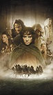

Post #1
Eu sou pequeno, me dizem, e eu fico muito zangado. Tenho de olhar todo mundo com o queixo levantado. Mas, se formiga falasse e me visse lá do chão, ia dizer, com certeza: — Minha nossa, que grandão!
Eu sou pequeno, me dizem, e eu fico muito zangado. Tenho de olhar todo mundo com o queixo levantado. Mas, se formiga falasse e me visse lá do chão, ia dizer, com certeza: — Minha nossa, que grandão!